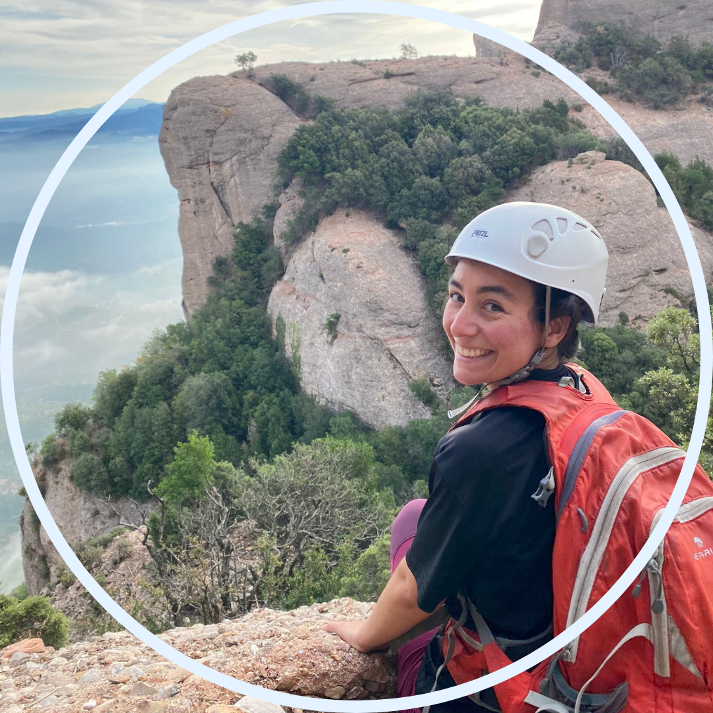
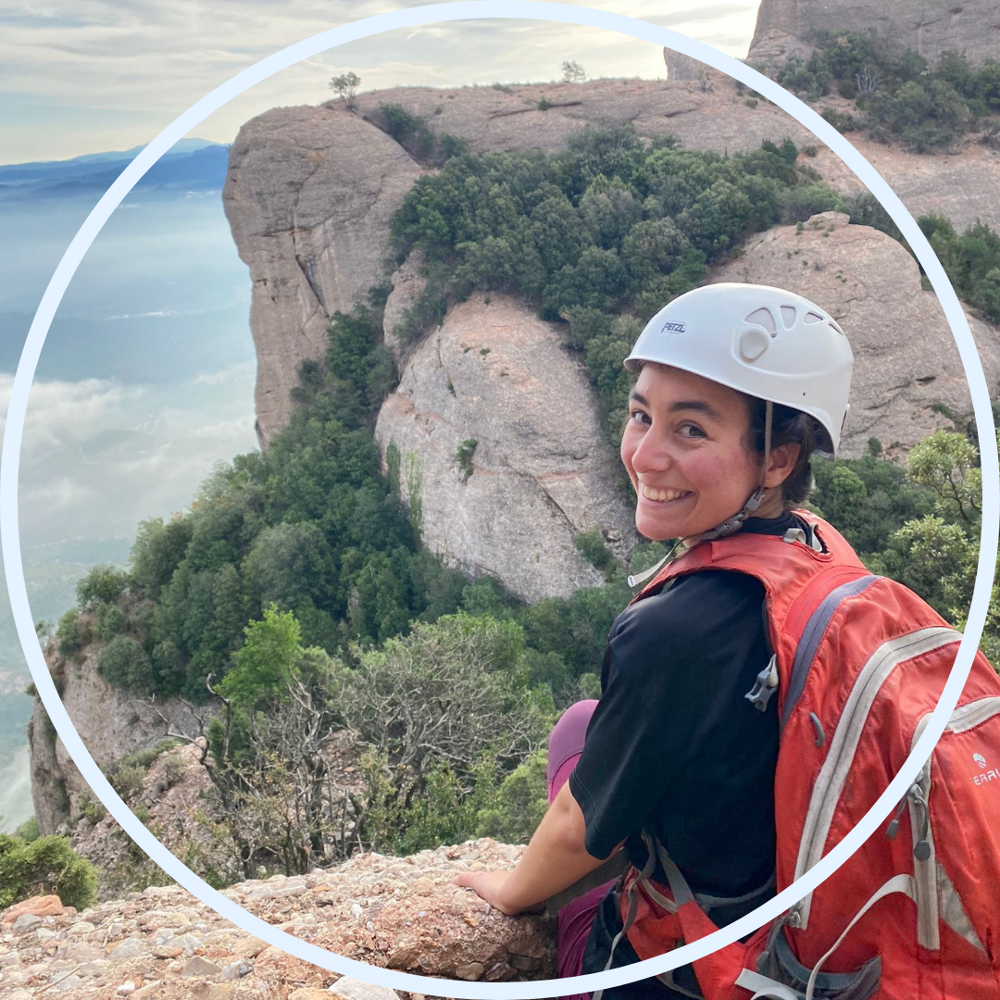

Bones!
Heu fet mai una llista de desitjos? O una llista de coses que us agradaria fer però que encara no heu fet? Això mateix és el que vaig fer fa cosa de mig any.
De moment deixo per aquí les matinals que vam fer el setembre del 2023, just coincidia que estava buscant feina, tenia tots els dies lliures, i hi havia un grupet de persones que o bé treballaven en horaris no típics, o estudiaven, o com jo eren ninis. Vam crear el grup de joves dels dijous. Amb ells vaig començar a grimpar, a agafar confiança i a gaudir de les sortides a la muntanya entre setmana. La fòrumla era quedar ben d'hora per començar a acminar a les 8am, i estar arribant a Barcelona cap a la una o les dues del migdia, així en Guillem podia anar a treballar sense haver d'engolir el dinar.
7 de setembre de 2023. Primera matinal! Avui he conegut en Guillem, l'Andreu i el Dani. Hem converçat sobre càncer de pell i sabates barefoot. En Guillem i en Dani em van dir que estava a la seva llista negre per haver cancel·lat una sortida que anava a fer amb ells. Sort que m'han conegut i m'hi han tret.
15 de setembre de 2023. Segona matinal, volem marcar el ritme d'una per setmana! Avui som en Guillem, l'Andreu, en Dani i jo, com la setmana passada. Però tenim dues noves incorporacions, l'Àlex, amic de la infància d'en Guillem, i la Marina, una de les meves millor amigues, veïna, i ex-companya d'atletisme.
21 de setembre de 2023. Tercera matinal, marcant el ritme d'una per setmana! Avui som en Guillem, l'Andreu, l'Àlex, la Marina i jo.
28 de setembre de 2023. Quarta matinal, i malaugradament última per mi. Malugradament però també és positiu, i és que la setmana que ve començo a treballar! Avui som en Guillem, l'Andreu, l'Àlex, en Josep cuiner i jo. Avui en Guillem ha vingut en camisa i una petaca plena d'aigua, per sort no hi porta alcohol haha.